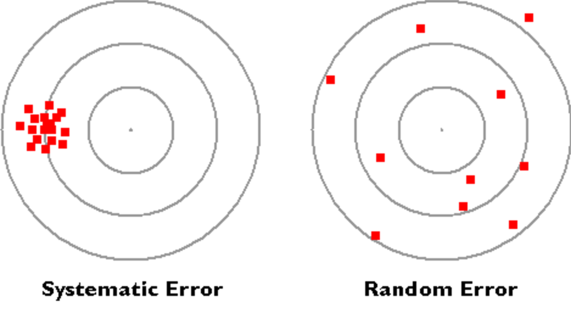
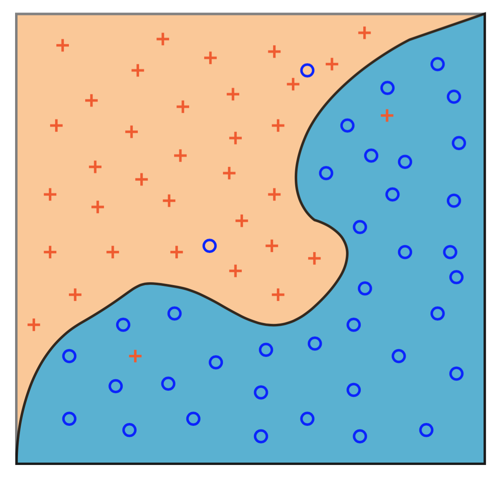
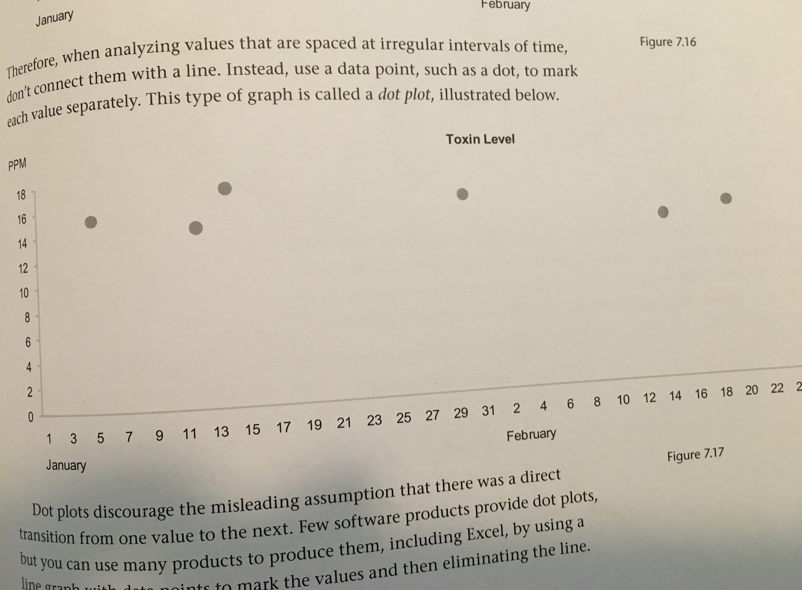

Uncertainty in Data Visualization
Me
- Alex, hi.
- Data Scientist @ Urban Institute
- Big Data Statistics
- Natural Language Processing
- Machine Learning
- Professor of Data [Viz & Science] @ JHU & GU
Visualizing uncertainty is an unsolved problem.
-Nathan Yau
Uncertainty in Data - Where does it come from?
- Measurement Error
- Statistical Error
- Predictive Error
- Cognitive & Perceptual Error
Measurement Error
Statistical Error
Probably the best understood.
Predictive Error
Error arising from making claims about the future or new data sets.
Cognitive & Perceptual Error
How do our pre-conceived notions of the data origination and our interpretation of the way the data is communicated affect our understanding of that data?
Cognitive & Perceptual Error
Don't suggest more than you know.

And clearly delineate speculation and imputation.
Showing Geographic Uncertainty
-Uncertainty in Poverty Rates-Animating Uncertainty
More Resources: